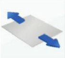
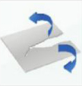
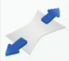
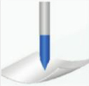
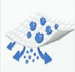
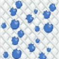
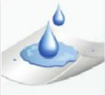
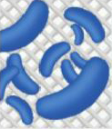

1. Resistencia a la tensión (horizontal y transversal):

ASTM D5034. La prueba refleja la resistencia y durabilidad del material.
2. Rasgado trapezoidal (horizontal y transversal):

INSA IST 100-2. La prueba refleja la resistencia del material una vez rasgada la tela.
3. Elongación:

ASTM D5034. Este test refleja la resistencia y flexibilidad del material.
4. Prueba de ruptura Müllen o prueba de resistencia a la punción:

ISO 13938-1. La prueba refleja la resistencia del material a la fuerza de punción.
5. Disipación Estática:
NFPA 99. Esta prueba indica si el material es antiestático.
6. Flamabilidad:
CPSC 1610. Esta prueba clasifica el material de acuerdo a sus propiedades ignifugas
7. Hidrocabeza:
AATCC 127.1998. Esta prueba refleja la impermeabilidad del traje. Entre mayor sea su valor, más resistente a la penetración de líquidos.
8. Retención de partículas:

Este test refleja el nivel de filtración de partículas de los trajes de protección. Entre mayor sea la retención, mayor protección brindará el traje contra partículas.
9. Permeabilidad del aire:
ASTM D737. Este test nos indica la capacidad del material para que el aire lo atraviese. La permeabilidad del aire o respirabilidad, se traduce en comodidad.
Entre mayor sea la permeabilidad del aire, mayor frescura se tendrá dentro del traje.
10. WVTR o Tasa de Transmisión del Vapor de Agua
Es la tasa de estado estacionario en el que el vapor de agua penetra a través de una película, en condiciones específicas de
temperatura y humedad relativa. Esta prueba refleja que tanto vapor proveniente del sudor puede escapar a través de la tela. Entre mayor sea la razón, mayor va a ser la comodidad del traje.
11. Prueba de pelusa:

INDA 160.1-92. Esta prueba refleja la propiedad del material de no desprender partículas mayores a 0,5 micras.
12. Prueba de penetración de sangre:

ASTM F1670. Prueba estándar para medir la resistencia de materiales utilizados en la ropa de protección a la penetración de sangre.
Prueba de Hematógenos:

ASTM F1671. Prueba estándar que mide la resistencia de los materiales usados en trajes de protección contra la penetración de patógenos transmitidos por la sangre, usando el sistema de prueba de penetración del bacteriófago Phi-X174.